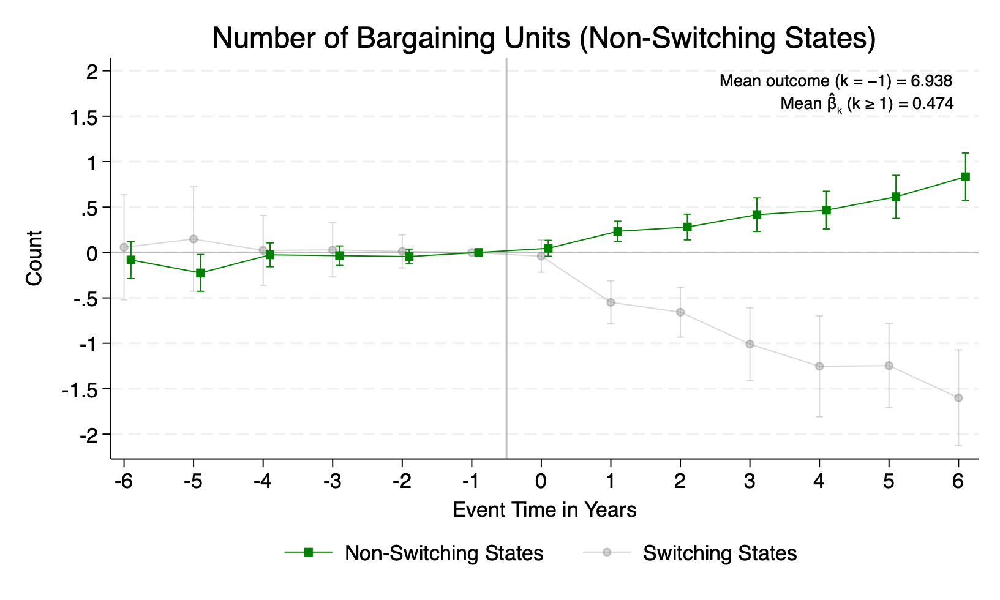
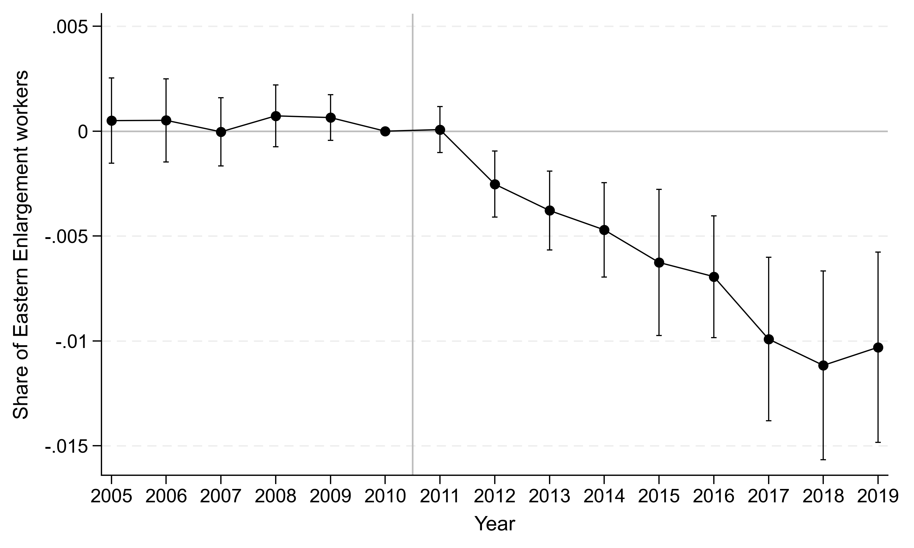

Research
Job Market Paper
Unions' Internal Networks and Spillovers: Evidence from Right-to-Work Laws in the US
Abstract and main result
We document the expanding geographic scope of labor unions in the US and show how the resulting organizational networks propagate shocks across distant labor markets. The number of states the average union local (union branch) operated in doubled from 1.5 in 2001 to 3 in 2011. As a consequence, shocks to unionized workers in one state are likely to have spillovers if unions respond by reallocating resources across states. We show this mechanism at work in the context of state-level Right-to-Work (RTW) laws, which make it optional to pay union dues. A model of a multistate union predicts spillovers with a sign that depends on the relative strength of substitution and scale effects. We test for spillovers using the adoption of five RTW laws between 2012 and 2017. RTW laws have negative direct effects in adopting states and positive spillovers in non-adopting states; the average union represents 1.2 fewer bargaining units in adopting states and makes up for 35 percent of this loss in worker-level coverage by substituting towards non-adopting states. Notably, more than half of the spillover occurs in non-bordering states. We find no effect on the price or quality of union services. New organizing explains 34 percent of the spillover; the rest is explained by successful contract renegotiation for existing members. Despite the substitution, unions see a persistent decline in membership, revenues, and assets.


Work in Progress
The Effects of Minimum Wages on Collective Bargaining: Evidence from Germany [slides] [draft available soon]
Immigration and Insider-Outsider Dynamics in German Works Councils
Abstract and main result
This paper investigates the presence of insider-outsider dynamics in German works councils, often cited as model examples of codetermination between management and workers. Works councils are worker organizations that are consulted on a variety of shop-floor decisions, including hiring and firing. Because they have been shown to increase job security, there is some debate on whether they exhibit insider-outsider dynamics in their decisions. This has implications for firm performance (through hiring flexibility) and job quality (for jobs to be attractive to outsiders). We use a novel setting to study this question. In 2011, Germany opened its labor market to workers from eight new countries that joined the EU in 2004. This led to a substantial immigration-driven labor supply shock, with the share of immigrants in the German workforce more than doubling between 2011 and 2019. We compare the response of firms that had works councils before 2010 to those that did not in a difference-in-differences framework. Firms with works councils hired fewer workers from the new EU countries as a share of their workforce. However, they hired a higher share of workers on full-time contracts relative to firms without works councils, and these workers performed more complex tasks. We find no effects on wages and employment at the firm level. Our results highlight the role of insider-outsider dynamics in works councils in explaining recent evidence of firm segmentation between incumbent and immigrant workers.

